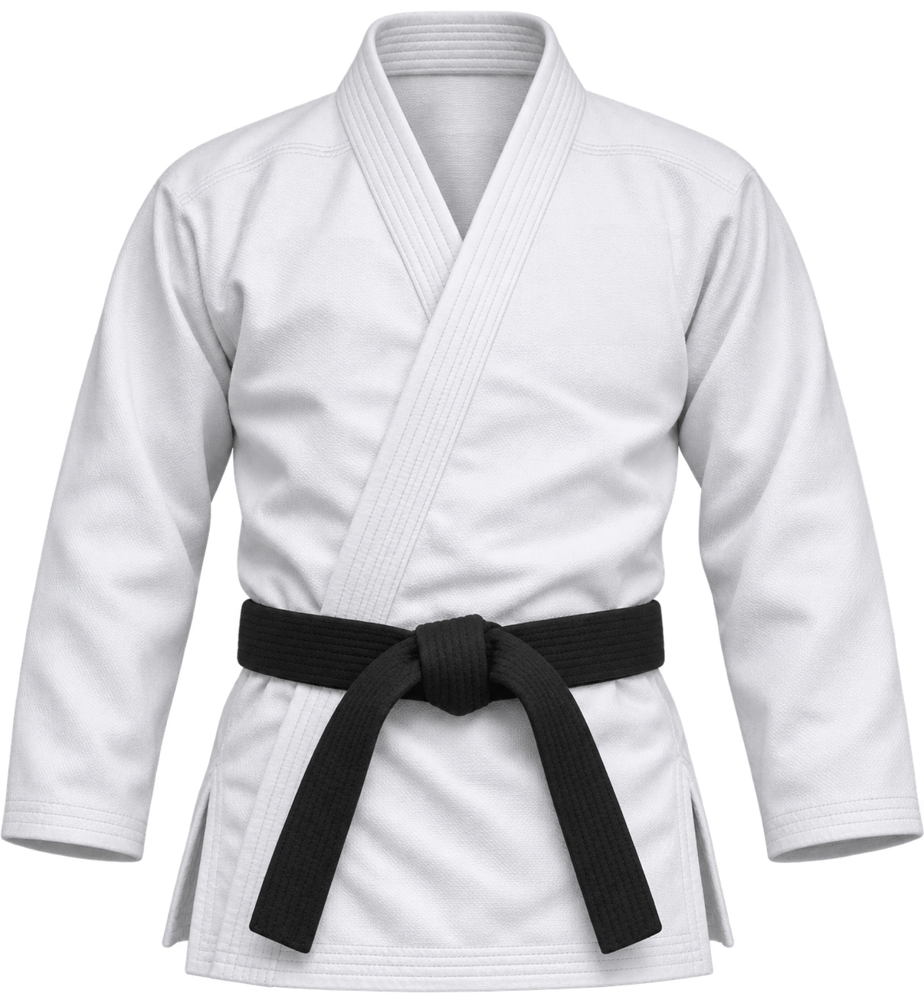
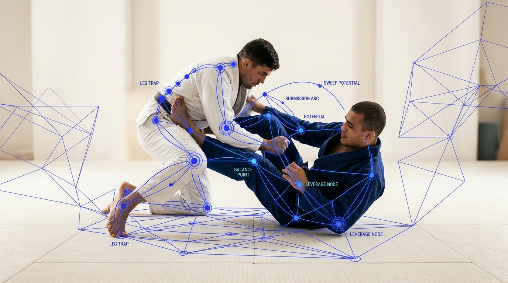
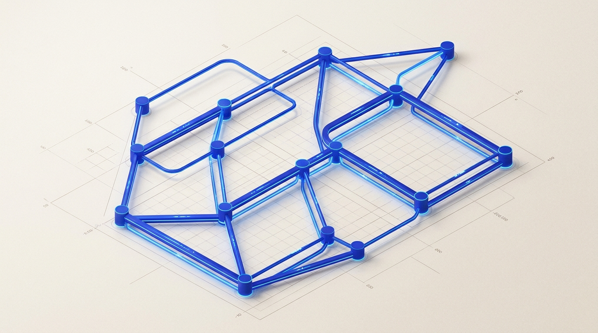

Grafos
biconexos
no jiu-jitsu
Identificação de pontos de articulação em redes de treino com o algoritmo de Tarjan — DFS + low-link, complexidade O(V + E).
José Carlos Ceccon
O que é um grafo biconexo?
Um grafo conexo é biconexo (ou 2-conexo) quando continua conexo após a remoção de qualquer vértice.
- Não possui pontos de articulação — vértices cuja remoção desconecta o grafo.
- Todo par de vértices possui ao menos dois caminhos disjuntos entre si.
- É resiliente: se um nó falhar, o fluxo desvia automaticamente por outra rota.
Vértices
Nós da rede (membros do clube).
Arestas
Conexões (treinos em comum).
Articulação
Nó crítico que partiria o grafo.
Tarjan: DFS + low-link
Uma única busca em profundidade (DFS) anota dois valores para cada vértice:
desc[v]
Ordem em que v foi descoberto durante a DFS.
low[v]
Menor desc alcançável a partir da subárvore de v.
Um vértice u (não-raiz) é articulação quando um filho v satisfaz:
- A condição low[v] ≥ desc[u] indica que a subárvore de v não alcança nenhum ancestral de u por outra aresta.
- A raiz da DFS é articulação se tiver mais de um filho.
- Arestas de retorno atualizam o low-link.
- Custo total: O(V + E) — linear e eficiente.
Formulado em 1972 em conexão com a literatura de Robert Sedgewick. Reduz a identificação de articulações de um custo ingênuo O(V · (V + E)) para uma única passada linear em profundidade.
Os trechos que importam
A DFS em ação
O teste de mesa formal
| Passo | Ação / Evento | u | Pai | desc[u] | low[u] | Condição Avaliada / Resultado |
|---|---|---|---|---|---|---|
| 1 | Visitar raiz | J01 | - | 0 | 0 | Entrada DFS (desc=0, low=0) |
| 2 | Árvore J01→J02 | J02 | J01 | 1 | 1 | Entrada DFS (desc=1, low=1) |
| 3 | Árvore J02→J03 | J03 | J02 | 2 | 2 | Entrada DFS (desc=2, low=2) |
| 4 | Retorno J03→J01 | J03 | J02 | 2 | 0 | low[J03] = min(2, desc[J01]=0) = 0 |
| 5 | Árvore J03→J04 | J04 | J03 | 3 | 3 | Entrada DFS (desc=3, low=3) |
| 6 | Árvore J04→J05 | J05 | J04 | 4 | 4 | Entrada DFS (desc=4, low=4) |
| 7 | Retorno J05→J03 | J05 | J04 | 4 | 2 | low[J05] = min(4, desc[J03]=2) = 2 |
| 8 | Retorno DFS J05→J04 | J04 | J03 | 3 | 2 | low[J04]=min(3, low[J05]=2)=2 | low[J05]≥desc[J04] (F) |
| 9 | Retorno DFS J04→J03 | J03 | J02 | 2 | 0 | low[J04]=2 ≥ desc[J03]=2 → J03 ARTICULAÇÃO! |
| 10 | Retorno J03→J05 | J03 | J02 | 2 | 0 | low[J03] = min(0, desc[J05]=4) = 0 |
| 11 | Retorno DFS J03→J02 | J02 | J01 | 1 | 0 | low[J02]=min(1, low[J03]=0)=0 | low[J03]≥desc[J02] (F) |
| 12 | Retorno DFS J02→J01 | J01 | - | 0 | 0 | low[J01]=0 | Raiz J01 tem apenas 1 filho DFS (F) |
| 13 | Retorno J01→J03 | J01 | - | 0 | 0 | Fim da DFS · 1 componente · Articulações: {J03} |
Por que J03 é articulação?
Ao voltar do filho J04 para J03, o algoritmo compara:
low[J04] (2) ≥ desc[J03] (2)
Como a condição é verdadeira, o subgrafo {J04, J05} não tem aresta de volta para os ancestrais de J03 (J01 ou J02). J03 é, portanto, o único gargalo.
teste_de_mesa_biconexo.xlsx
Planilha oficial elaborada com as abas Grafo Original (13 passos) e Grafo Biconexo (15 passos), seguindo a estrutura padrão das salas virtuais de TPA.
O clube de jiu-jitsu
Traduzimos o problema abstrato para uma rede real de treino:
- Vértices → alunos e professores (J01 … J05).
- Arestas → dois membros que treinaram juntos ≥ 3 sessões no mês.
- Objetivo → descobrir se algum membro é ponto único de conexão da rede.
A rede forma dois triângulos ligados por um único vértice.
Do tatame à teoria dos grafos

No Jiu-Jitsu, posições e raspagens dependem de alavancas e conexões mecânicas. No clube, a transmissão de conhecimento segue a mesma lógica.
- Duas turmas distintas: A turma matutina {J01, J02} e a turma noturna {J04, J05} treinam em horários desencontrados.
- O membro integrador (J03): Atleta ou instrutor que frequenta ambos os turnos, tornando-se o elo exclusivo de difusão técnica.
- A vulnerabilidade: Uma rede que depende de apenas um indivíduo para se manter unida corre sério risco de fragmentação.
J03 é o ponto de dependência
A DFS identifica J03 como a única articulação da rede original:
- Pertence ao triângulo {J01, J02, J03} e também a {J03, J04, J05}.
- É a única ponte entre os dois grupos.
- Um “gargalo humano”: se J03 parar, os grupos perdem contato.
Removendo J03…
Ao sair da rede, J03 desconecta o clube em duas componentes isoladas:
Componente 1
{ J01, J02 }
Componente 2
{ J04, J05 }
Rede biconexa: adicionar J02–J04
Uma única aresta nova cria um caminho alternativo entre os dois grupos, eliminando a dependência de J03.
- Elimina a articulação J03.
- Torna o grafo biconexo — nenhum membro é crítico.
- Suporta treinos conjuntos e integração entre os grupos.
Comparação das redes
Vulnerável
- 5 vértices · 6 arestas
- J03 é articulação única
- Remover J03 → 2 componentes
- Não é biconexo
Resiliente
- 5 vértices · 7 arestas (+1)
- Nenhum ponto de articulação
- Remover qualquer vértice → 1 componente
- É biconexo ✓
| Algoritmo | Restrição | Caso Típico | Pior Caso | Espaço Extra |
|---|---|---|---|---|
| Tarjan (DFS + Low-Link) | Grafo não-dirigido conexo | V + E | V + E | V (pilha + vetores) |
| Força Bruta (remoção de vértices) | Testa V componentes via BFS | V · (V + E) | V · (V + E) | V |
Aplicações reais: Redes resilientes

O mesmo algoritmo de Tarjan em $O(V + E)$ é aplicado em infraestruturas críticas onde a interrupção não é uma opção:
Internet & Roteamento
Identifica roteadores que são Single Points of Failure (SPOF) em backbones BGP e topologias de data centers.
Redes Elétricas
Subestações de transmissão elétrica precisam ser 2-conexas para evitar que a queda de uma torre cause apagão em cascata.
Logística & Suprimentos
Garante que o bloqueio de um porto ou rodovia principal não interrompa o abastecimento entre regiões produtivas.
E-mails no IFES (2022)
Estudos acadêmicos aplicam decomposição biconexa para mapear gargalos de comunicação interpessoal em instituições.
Grafos biconexos tornam a rede mais forte
Algoritmo eficiente
Uma DFS com low-link encontra articulações em O(V + E).
Diagnóstico claro
J03 identificado como ponto único de dependência na rede.
Solução mínima
Uma aresta (J02–J04) elimina a vulnerabilidade da rede.
O mesmo raciocínio se aplica a redes de e-mail, infraestrutura, cadeias de suprimentos — qualquer rede que precise de resiliência.